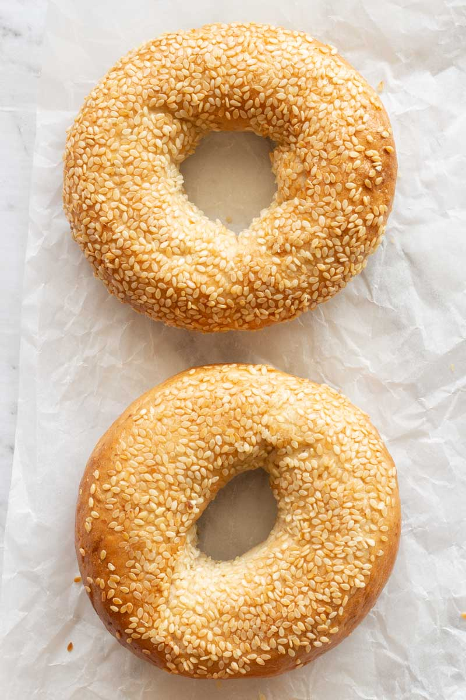

Ingredients
- 1 3/4 cup almond flour
- 1 tablespoon baking powder
- 3 cups mozzarella cheese shredded
- 2 oz cream cheese softened
- 3 large eggs divided
- 1 tablespoon sesame seeds optional
Description
These keto bagels are chewy and dense in the middle and have a tender crust, they taste like the real thing! Made with just 5 ingredients, these have no yeast in them!
Recipe credits:
Steps
- Preheat the oven to 200C/400F. Line a large baking tray with parchment paper and set aside.
- In a small bowl, combine the almond flour and baking powder and set aside. In a microwave safe bowl, add the mozzarella cheese and cream cheese. Microwave them together in 30-second spurts, until mostly melted. Whisk them together until smooth.
- Transfer the mixture into a food processor, along with two of the eggs and dry ingredients, and pulse until smooth.
- Lightly flour a kitchen surface with some almond flour. Transfer the dough onto it and divide it into eight equal portions. Roll out each piece of dough into a thin, sausage shape. Connect the sides to form bagels.
- Place the bagels onto the lined baking sheet. Whisk the third egg in a small bowl then brush it over the tops of each bagel, then sprinkle your toppings of choice. Bake the bagels for 12-15 minutes, until firm and golden on top.
- Remove the bagels from the oven and let them cool completely, before slicing and serving..
Notes
Nutrition
- Serving: 1serving | Calories: 236kcal | Carbohydrates: 2g | Protein: 12g | Fat: 25g | Fiber: 1g | NET CARBS: 1g